综述十：多模态模型
模型
基础模型
LLaVA: Visual Instruction Tuning (23/04)
论文地址
代码
核心思想：指令调优大型语言模型（LLMs）使用机器生成指令遵循数据，被证明在新任务上提升零样本能力，但这一想法在多模态领域的探索较少。提出第一个尝试，使用仅语言GPT-4来生成多模态语言图像指令遵循数据。通过在这种生成数据上指令调优，引入LLaVA:大型语言和视觉助手，一种端到端训练的大型多模态模型，连接视觉编码器和LLM，用于通用用途视觉和语言理解。为促进在视觉指令遵循上的进一步研究，构建两个具有多样性和挑战性的面向应用任务的评估基准。
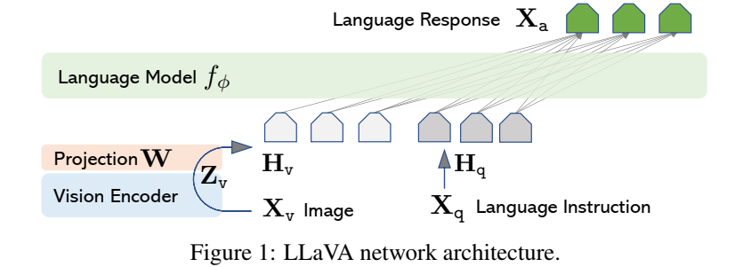
Qwen-VL: A Versatile Vision-Language Model for Understanding, Localization, Text Reading, and Beyond (23/10)
论文地址
代码
核心思想：在这项工作中，介绍了Qwen-VL系列，这是一组旨在感知和理解文本和图像的大规模视觉语言模型（LVLMs）。以Qwen-LM为基础，通过精心设计的（i）视觉接收器，（ii）输入输出接口，（iii）三阶段训练管道和（iv）多语言多模态清理语料库，赋予它视觉能力。除了传统的图像描述和问答之外，我们还通过对齐图像字幕框元组（aligning image-caption-box tuples）来实现Qwen-VL的基础和文本阅读能力。由此产生的模型，包括QwenVL和Qwen-VL-Chat，在类似的模型尺度下，在广泛的以视觉为中心的基准（例如，图像字幕、问题回答、视觉基础）和不同的设置（例如，零样本、少样本）上为广义模型创下了新的记录。此外，在现实世界的对话基准测试中，我们的指令调优Qwen-VL-Chat也显示出了与现有视觉语言聊天机器人相比的优越性。
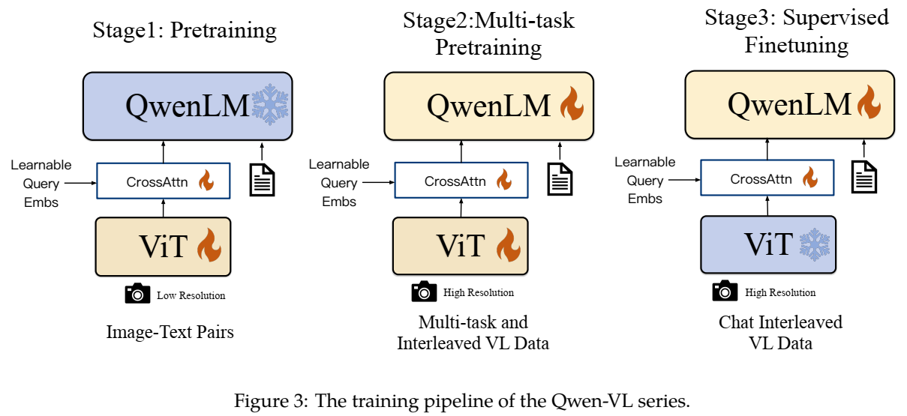
Qwen2-VL: Enhancing Vision-Language Model’s Perception of the World at Any Resolution (24/10)
论文地址
代码
核心思想：我们推出了Qwen2-VL系列，这是对之前Qwen-VL型号的高级升级，重新定义了视觉处理中传统的预定分辨率方法。Qwen2-VL引入了朴素动态分辨率机制（Naive Dynamic Resolution mechanism），该机制使模型能够将不同分辨率的图像动态处理成不同数量的视觉标记。这种方法使模型能够生成更高效、更准确的视觉表示，与人类的感知过程紧密结合。该模型还集成了多模态旋转位置嵌入（M-RoPE），促进了文本、图像和视频之间位置信息的有效融合。我们采用统一的范式来处理图像和视频，增强了模型的视觉感知能力。为了探索大型多模态模型的潜力，Qwen2-VL研究了大型视觉语言模型（LVLMs）的缩放规律。通过在2B、8B和72B参数下扩展模型大小和训练数据量，Qwen2-VL系列实现了极具竞争力的性能。值得注意的是，Qwen2-VL-72B模型在各种多模态基准测试中取得了与GPT-4o和Claude3.5-Sonnet等领先模型相当的结果，优于其他通用模型。
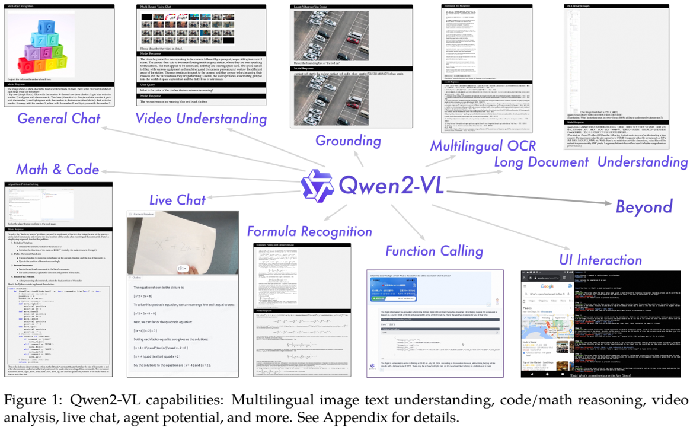
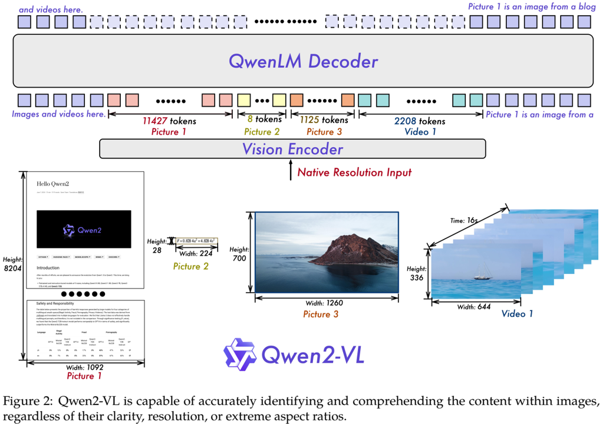
finetuning-free
Sparse Attention Vectors: Generative Multimodal Model Features Are Discriminative Vision-Language Classifiers (24/12)
论文地址
核心思想：生成式大型多模态模型（LMMs），如LLaVA和Qwen-VL，擅长广泛的视觉语言（VL）任务，如图像字幕或视觉问答。尽管性能强大，LMMs不能直接适用于基础判别视觉语言任务（如，需要离散标签预测的任务），诸如图像分类和多选择VQA。利用LLMs进行判断任务的关键挑战是来自生成式模型的有用特征提取。为解决这个问题，提出一种方法，用于找到模型潜在空间中的特征，来更有效地利用LMMs进行判别任务。为此，提出稀疏注意力向量（SAVs, Sparse Attention Vectors）——一种无需微调的方法，利用LMMs中的稀疏注意头激活（少于该头的1%）作为用于VL任务的强大特征。与一系列判别性任务上的各种少样本和微调基线相比，SAVs仅通过少数示例就展示了最先进的性能。我们的实验还表明，SAVs可以通过额外的示例来扩展性能，并推广到类似的任务，从而将SAVs确立为有效和鲁棒的多模态特征表示。
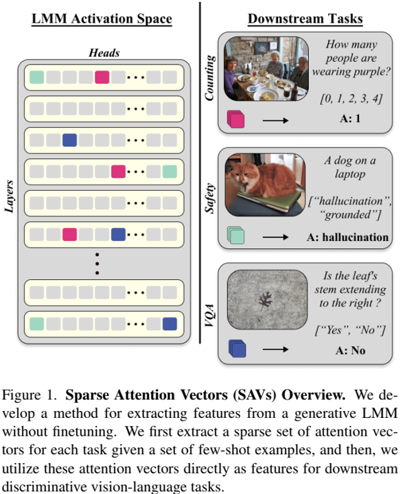
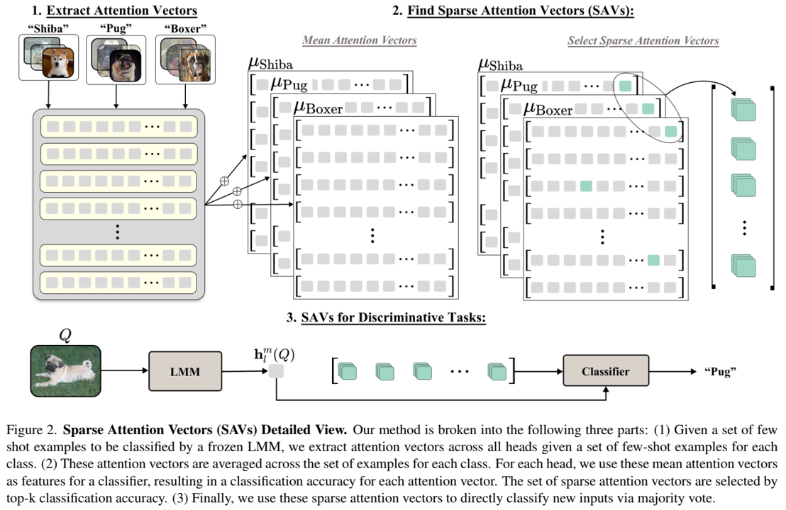
组分
压缩量化
A Wander Through the Multimodal Landscape: Efficient Transfer Learning via Low-rank Sequence Multimodal Adapter (24/12)
论文地址
核心思想：高效的迁移学习方法，如基于适配器的方法，已经证明在单模态模型和视觉语言模型中的极大成功。然而，现有方法在微调多模态模型中有两个主要挑战。首先，它们设计用于视觉语言任务，从而不能成功扩展到超过两种模态的情景。其次，它们展示了模态间的有限的交互利用，且缺乏效率。为了解决这些问题，本文，提出低秩序列多模态适配器（Wander, LoW-rank sequence multimodal adapter）。首先，使用外积来有效地融合来自不同模态间的信息，以一种逐元素的方式。对于效率，使用CP分解来因子化张量到一阶组分（rank-one components），并取得大量参数减少。此外， 实现标记级别低秩分解（token-level low-rank decomposition）来提取更加细粒度的特征和模态间的序列关系。通过这些设计，Wander以参数高效的方式实现了不同模态序列间的标记级交互。在具有不同模态数量的数据集上进行了广泛的实验，Wander始终优于最先进的高效迁移学习方法。结果充分证明了Wander的有效性、高效性和通用性。
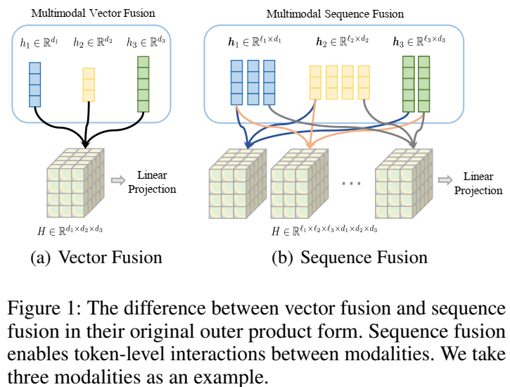
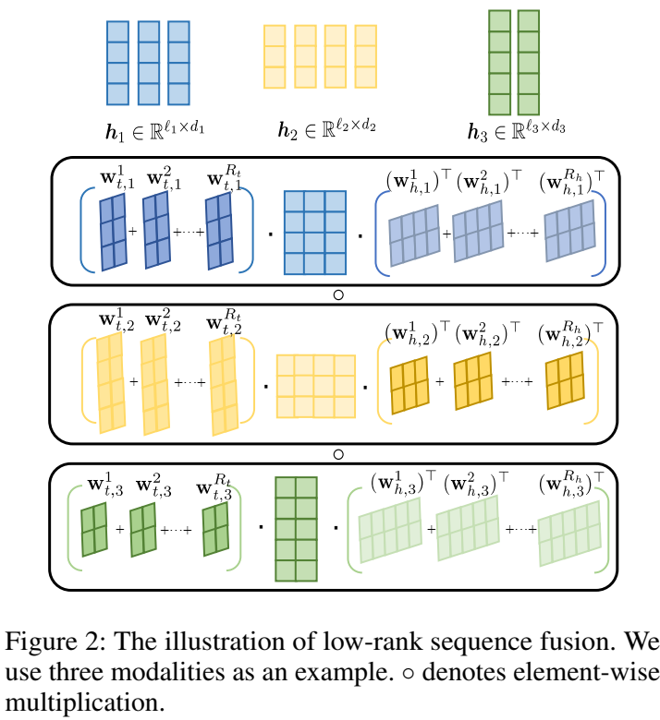
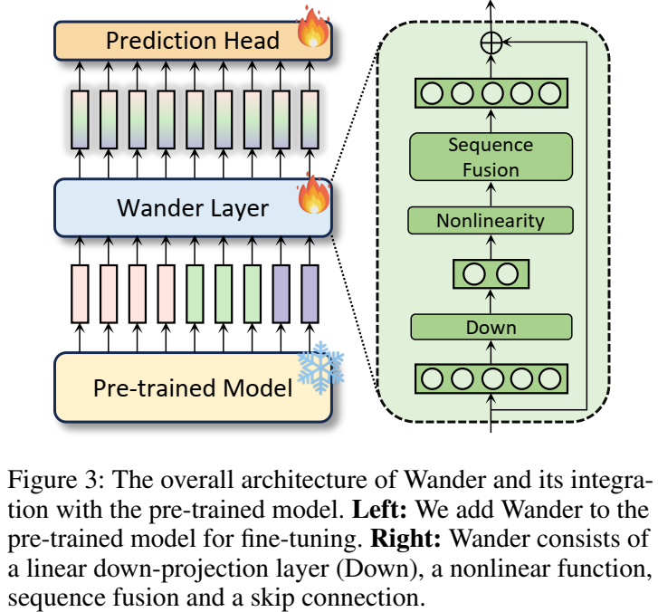
模态嵌入
Jina-Clip-v2: Multilingual Multimodal Embeddings for Text and Images (24/12)
论文地址
代码
核心思想：对比语言图像预训练（CLIP）是一种在共享嵌入空间中对齐图像和文本的高效方法。这些模型被广泛用于跨模态信息检索和多模态理解等任务。然而，CLIP模型经常难以处理纯文本任务，与专门的文本模型相比表现不佳。这种性能差异迫使检索系统依赖于单独的模型来完成纯文本和多模式任务。在这项工作中，我们在之前的模型jina-clip-v1的基础上，引入了一个改进的框架，该框架利用跨多种语言的多任务、多阶段对比学习，并结合改进的训练方法来增强纯文本检索。由此产生的模型jina-clip-v2在纯文本和多模式任务上优于其前身，同时增加了多语言支持，更好地理解复杂的视觉文档，并通过Matryoshka表示学习和向量截断提高了效率。该模型在多语言多模态和多语言文本检索基准测试中的表现与最先进的水平相当，解决了统一纯文本和多模式检索系统的挑战。
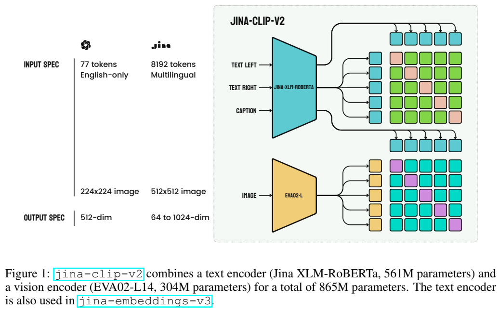
指令模板
Template Matters: Understanding the Role of Instruction Templates in Multimodal Lanuage Model Evaluation and Training (24/12)
论文地址
代码
核心思想：当前的多模态语言模型（MLMs）评估和训练方法忽视了指令格式的影响，呈现出“房间里的大象”问题。之前的研究通过手动编写指令来解决这个问题，由于多样性和可扩展性的限制，未能产生重要的见解。在这项工作中，我们提出了一种程序化指令模板生成器，通过将随机采样的位置同义词填充到加权采样的元模板中，能够生成超过39B的唯一模板组合，使我们能够全面检查MLM在不同指令模板中的性能。我们在五个基准数据集上对八种常见MLMs进行的实验表明，MLMs具有很高的模板敏感性，不同模板之间的性能差距最多为29%。我们进一步使用我们的模板生成器扩展了LLaVA-1.5的指令调优数据集，并对LLaVA-1.5-7B和LLaVA-1-5-13B进行指令调优。与在最多是我们增强数据集的 75 倍规模上进行调整的相同规模 MLM 相比，在我们的增强数据集上进行调整的模型实现了最佳整体性能，凸显了指令模板在 MLM 训练中的重要性。
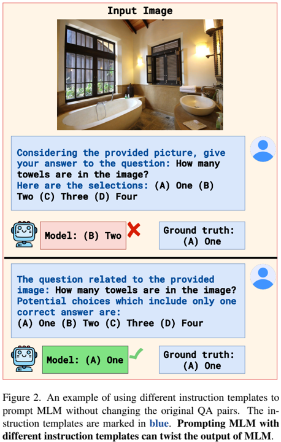
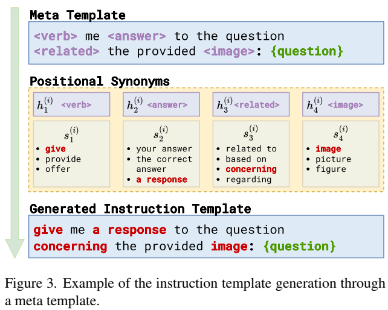
基准
Do Multimodal Large Language Models See Like Humans? (24/12)
论文地址
核心思想：多模态大型语言模型（MLLM）利用大型语言模型的最新进展，在各种视觉任务上取得了令人印象深刻的成果。然而，一个关键问题仍未得到解决：MLLM感知视觉信息的方式与人类相似吗？目前的基准缺乏从这个角度评估MLLM的能力。为了应对这一挑战，我们引入了HVSBench，这是一个大规模的基准测试，旨在评估MLLM和人类视觉系统（HVS）在反映人类视觉的基本视觉任务上的对齐情况。HVSBench策划了超过85K个多模态样本，涵盖HVS的13个类别和5个领域，包括突出度、子对象化、优先级、自由查看和搜索。广泛的实验证明了我们的基准在提供MLLM综合评估方面的有效性。具体来说，我们评估了13个MLLM，结果表明，即使是最好的模型也显示出巨大的改进空间，大多数模型只取得了适度的结果。我们的实验表明，HVSBench对尖端MLLM提出了新的重大挑战。我们相信，HVSBench将促进对人类对齐和可解释的MLLM的研究，标志着理解MLLM如何感知和处理视觉信息的关键一步。
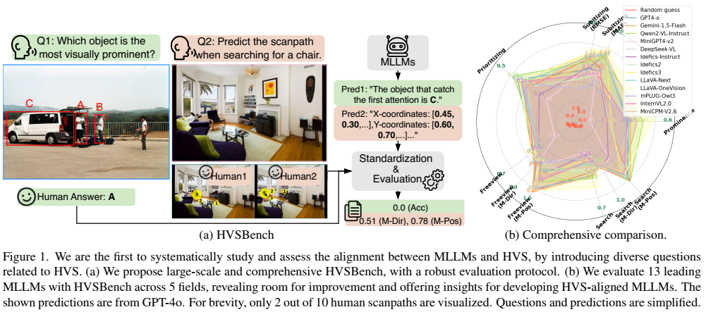
应用
分类
When XGBoost Outperforms GPT-4 on Text Classification: A Case Study (24/06)
论文地址
代码
核心思想：大型语言模型（LLMs）越来越多地用于文本生成之外的应用程序，从文本摘要到指令遵循。利用LLM的零和少样本能力的一个流行例子是文本分类任务。本文将两种流行的基于LLM的分类管道（GPT-4和LLAMA 2）与LLM时代之前（pre-LLM-era）流行的分类管道在新闻可信度分类任务上进行了比较，重点关注性能、训练和部署要求。发现，在这种情况下，LLM时代之前的集成管道优于两种流行的LLM管道，同时参数大小要小几个数量级
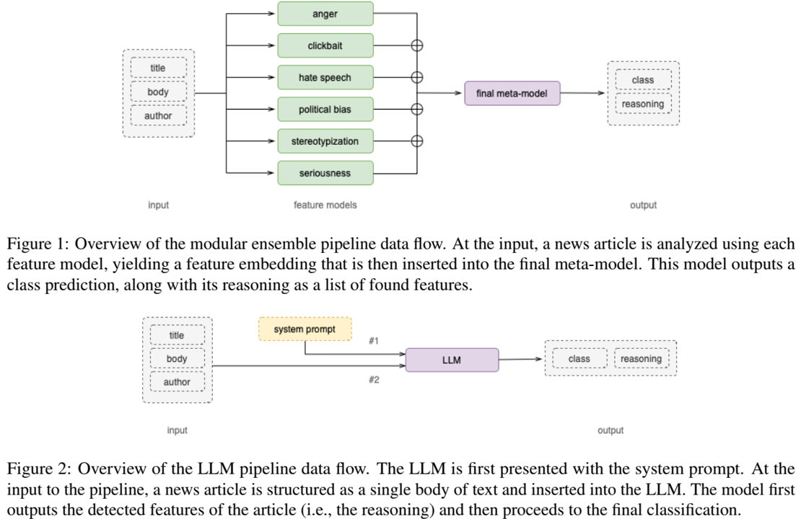
Fine-tuned ‘Small’ LLMs (Still) Significantly Outperform Zero-Shot Generative AI (24/08)
论文地址
核心思想：生成式人工智能为文本分类任务提供了一种简单的、基于提示的替代方案，以微调较小的BERT风格LLM。这有望消除对手动标记的训练数据和特定任务的模型训练的需求。然而，像ChatGPT这样的工具能否兑现这一承诺仍然是一个悬而未决的问题。在本文中，我们表明，在文本分类中，较小的、微调的LLM（仍然）始终显著优于较大的、零样本提示的模型。我们比较了三种主要的生成式人工智能模型（ChatGPT与GPT-3.5/GPT-4和Claude Opus），以及在不同分类任务（情绪、批准/不批准、情绪、政党立场）和文本类别（新闻、推特、演讲）中的几个微调的LLM。我们发现，使用特定于应用程序的训练数据进行微调在所有情况下都能实现卓越的性能。为了使这种方法更容易被更广泛的受众所接受，我们在本文旁边提供了一个易于使用的工具包。我们的工具包，伴随着非技术性的分步指导，使用户能够以最少的技术和计算工作量为任何分类任务选择和微调类似BERT的LLM。
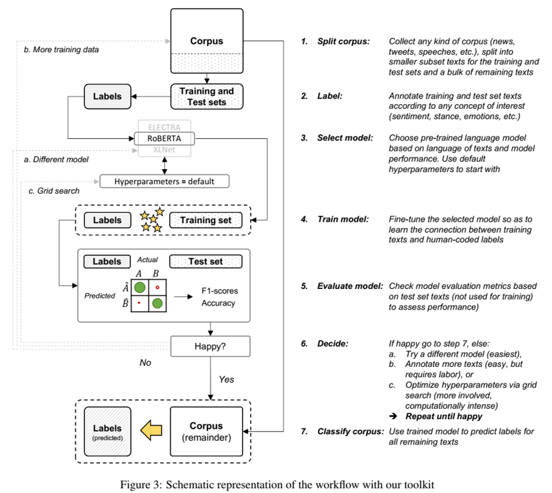
Multimodal Sentiment Analysis Based on Causal Reasoning (24/12)
论文地址
核心思想：随着多媒体的快速发展，近年来从单模态文本情感分析向多模态图像文本情感分析的转变引起了学术界和业界的关注。然而，多模态情感分析受到单模态数据偏差的影响，例如，由于明确的情感语义，文本情感具有误导性，导致最终情感分类的准确性较低。本文提出了一种新的反事实多模态情感分析框架（CF-MSA），该框架使用因果反事实推理来构建多模态情感因果推理。CF-MSA减轻了单模态偏差的直接影响，并通过区分不同模式之间的治疗变量来确保不同模式的异质性。此外，考虑到模态之间的信息互补性和偏差差异，我们提出了一个新的优化目标，以有效整合不同的模态并减少每种模态的固有偏差。在两个公共数据集MVSA-Single和MVSA-Multiple上的实验结果表明，所提出的CF-MSA具有优异的去偏能力，并实现了最新的最先进性能。我们将发布代码和数据集，以促进未来的研究。
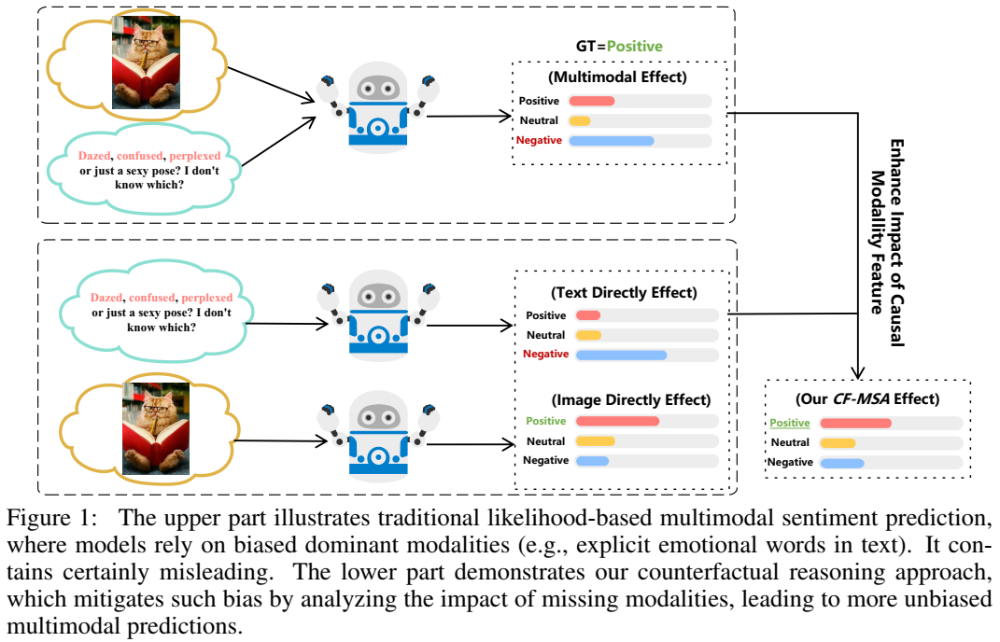